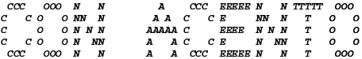
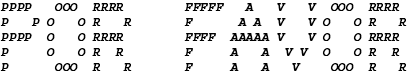

con acento es una guía de estudio, un zine, y un juego web cuyo objetivo es reforzar el compromiso de los bibliotecarios y archivistas para mitigar los errores de registro que (típicamente) involucran palavras y sustantivos propios que no están en inglés
con acento is a hybrid study guide and webgame which aims to reinforce librarians' and archivists' commitment to mitigating record keeping errors (typically) involving non-english names
con acento está desarrollado por Hayla Ragland y Emily Uruchima (Kichwa Kañari)
con acento is developed by Hayla Ragland and Emily Uruchima (Kichwa Kañari)
| option + E + E | = | é |
| option + U + U | = | é |
| option + N + N | = | ñ |
| option + N + N | = | ñ |
| option + C | = | ç |
| option + E + E | = | é |
| option + U + U | = | é |
| option + N + N | = | ñ |
| option + N + N | = | ñ |
| option + C | = | ç |
por favor, escribe tu nombre y presiona una tecla para empezar
⏰ 1:00
puntos: 0
| puesto | puntos | nombre | institución |
|---|
2026 by Hayla Ragland